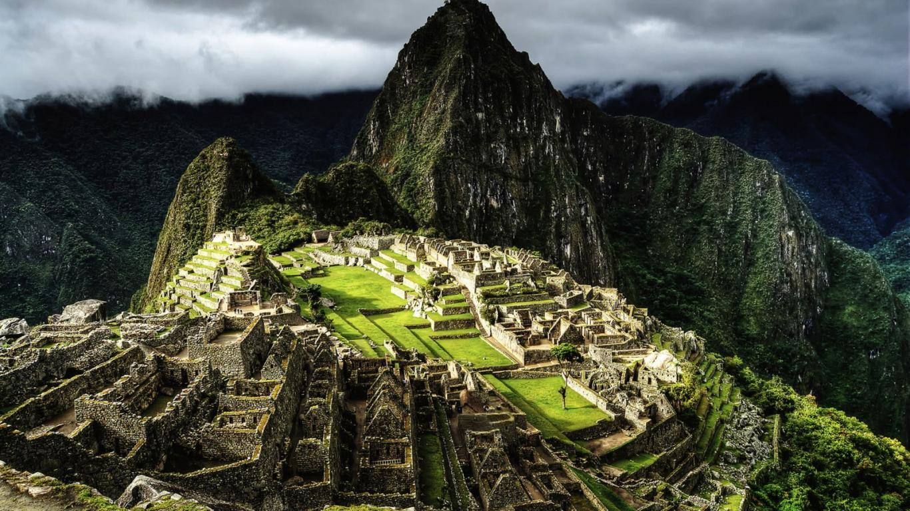
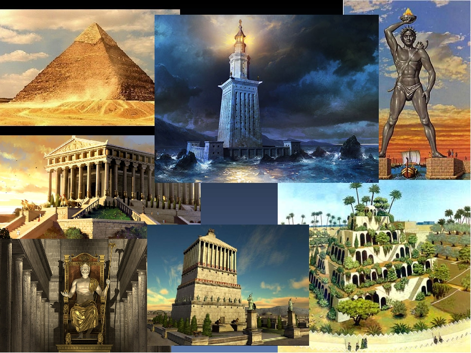
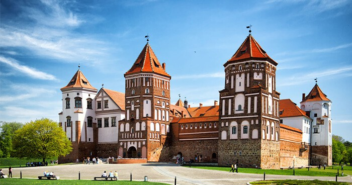
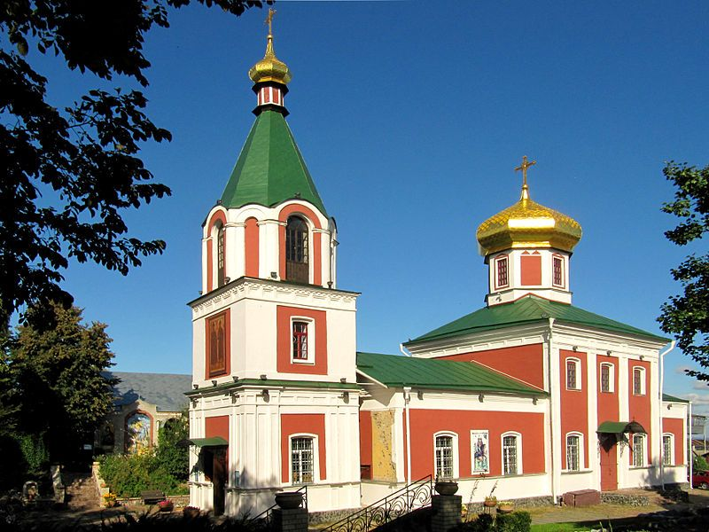
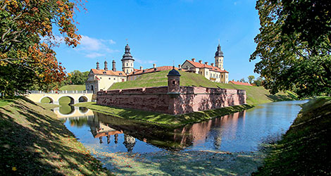
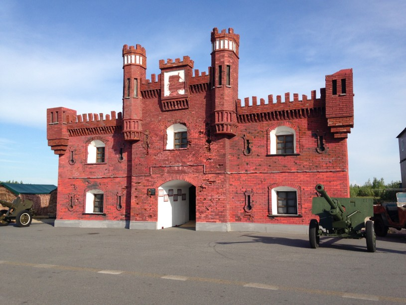
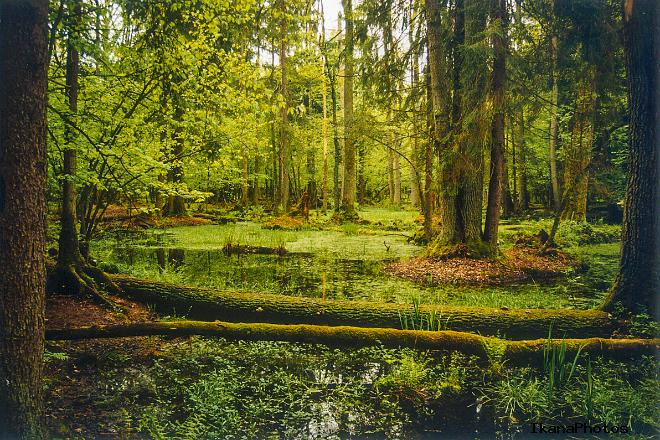
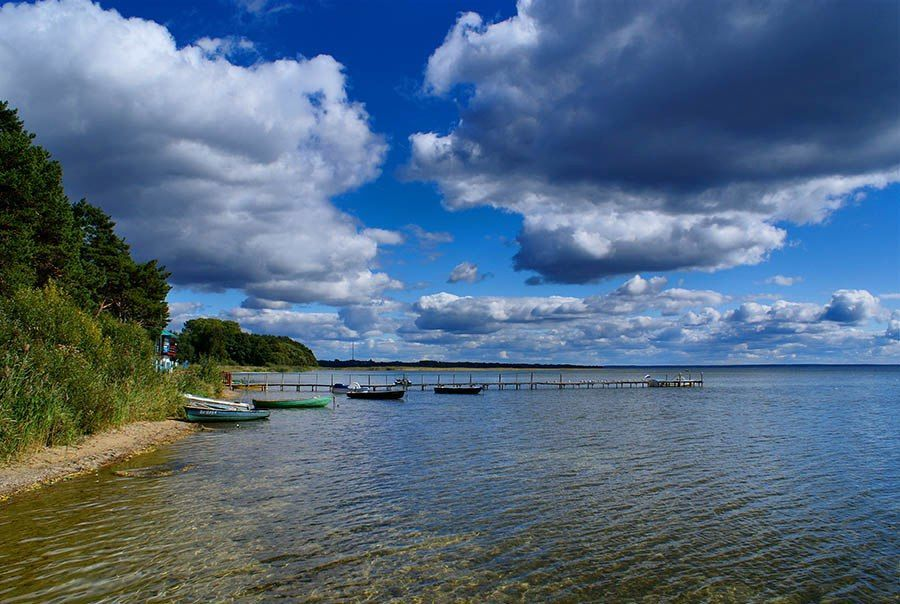

Семь чудес света
 На нашей планете есть множество естественных и искусственных объектов, которые поражают наше воображение. Это пирамиды в Египте и Мексике, истуканы на острове Пасхи, дворец Тадж-Махал в Индии, Стоунхендж в Великобритании, Ниагарский водопад в Канаде, Большой каньон в Колорадо и многие другие. Их называют «Чудеса света». Ежегодно сотни тысяч туристов приезжают посмотреть на эти диковины, принося ощутимый доход государствам, на территории которых они расположены.
 А пока предлагаем вспомнить, что представляет собой семерка «чудес света» в ее классическом варианте. Древний «рейтинг», напомним, был составлен неким Филоном, который посвятил восхищавшим его современников творениям рук человеческих целый трактат. В нем, правда, не дается полноценного описания исчезнувших чудес.
А пока предлагаем вспомнить, что представляет собой семерка «чудес света» в ее классическом варианте. Древний «рейтинг», напомним, был составлен неким Филоном, который посвятил восхищавшим его современников творениям рук человеческих целый трактат. В нем, правда, не дается полноценного описания исчезнувших чудес.
- Египетская пирамида
- Сады Семирамиды
- Храм Артемиды Эфесской
- Статуя Зевса Олимпийского
- Галикарнасский мавзолей
- Колосс Родосский
- Александрийский (Фаросский) маяк
|
|  |
 |
 |
 |
|  |
 |
 |
|